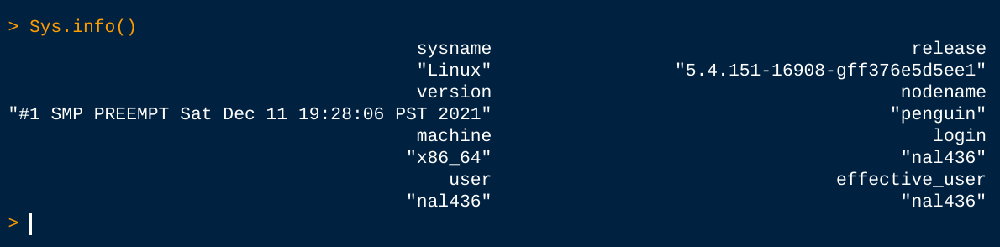

In one of the classes I taught earlier this year, a student asked me if a Chromebook could be used for the coursework. Typically, the students are told to have either a Mac or a Windows machine for the duration of the Data Science and Analytics bootcamp. From a technical support perspective, this makes sense - the University has limited resources and both macOS and Windows are far more popular than Linux for consumer use.
Short answer: YES, but with a few caveats!
Chromebooks can be used for data science - especially if they can run Linux (and most models on the market today can).
Chromebooks, for the uninitiated, are computers that are running ChromeOS - basically a computer built around the Chrome browser. And that’s keeping it simple. What I find remarkable about these devices is their capability - you can do much more than just browse the web. With the right extensions, you can edit images, create documents, edit video/audio files, and much more!
Chromebooks have a come a long way. Some models can easily run well over $1,000 and are as powerful as some of the latest Windows-based machines. Chromebooks’ claim to fame, however, tends to be price & battery life. Many Chromebooks can easily last more than 6 hours with normal usage.
One of the most important changes that Google has made to ChromeOS is the ability to run Linux on a Chromebook without any hack. In fact, it’s a supported method!
And with Linux, you can easily install almost any application you want - especially for Data Science work. This includes applications such as RStudio & VSCode. And you can have Python with Conda!
Here’s a peek at my “dock” on my own Chromebook:
Neither of these two applications are available for ChromeOS and here they are on my Chromebook running!

And here, you can see RStudio recognizing that I’m running Linux.
You can always ‘flash’ the Chromebook and put Linux on there natively or use crouton which will run Linux side-by-side with ChromeOS.
If you’re familiar with virtualization and containerization (think Docker), then you will undoubtedly be familiar with how things work. Google’s official solution is to have a ‘containerized’ version of Linux running - and with this certain limitations are introduced. For instance, there is no webcam access available to the Linux container on Chromebooks. Certain touchpad gestures also don’t work.
Perhaps the most interesting catch is the fact that Linux is not available on every Chromebook. You have to pay attention to the CPU that’s on the Chromebook (ARM vs. Intel/x86). Also, running Linux apps on an under-powered machine will yield a sub-optimal experience. In order to have a great experience and be able to run multiple Linux apps, you’ll need to have a decent spec’d Chromebook - and this can be pricey. Some Chromebook models easily approach & exceed prices of well spec’d Windows machines.
And if you run into any major issues, you’ll have to do much of the legwork yourself to find solutions. That includes searching Reddit, StackOverflow, etc.
If you think about today’s Data Science workflow, what software/services are used?
All of these can be installed locally on your Chromebook with Linux. I’ll even venture to say that a Chromebook that can run Linux should be able to run some simple models with no issues. Obviously, the more powerful hardware you have, the more complex models you can run. Nowadays, however, you don’t need to have any installed software locally - regardless of your OS. All you need is a browser.
For instance, you can use Google CoLab to run your code using cloud resources all from the comfort of your own browser or Chromebook.
For the bootcamp program, the student will need git, VSCode, Python, and MySQL. And all four software are easily available on Linux and can be installed on the right Chromebook. So yes! The student can use a Chromebook with two caveats:
And I’m happy to say that I’m using my Chromebook as my main coding machine!
I’ve created a Gist on GitHub that contains links and my own comments on how to install some of the software I use on my own Chromebook